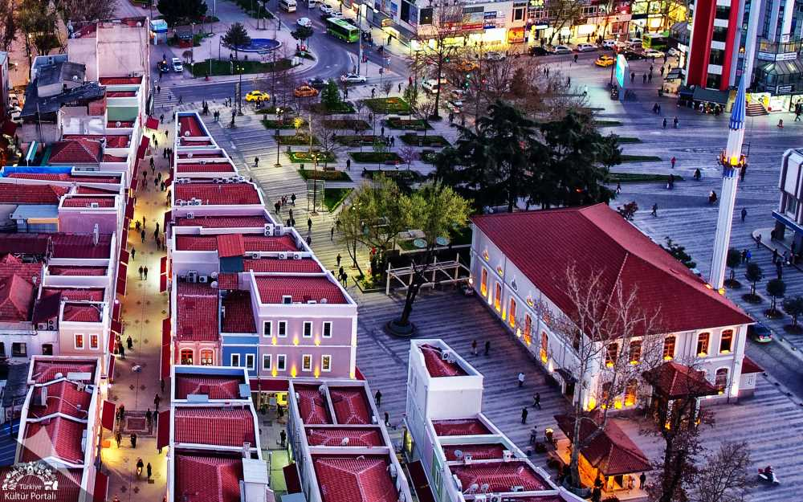
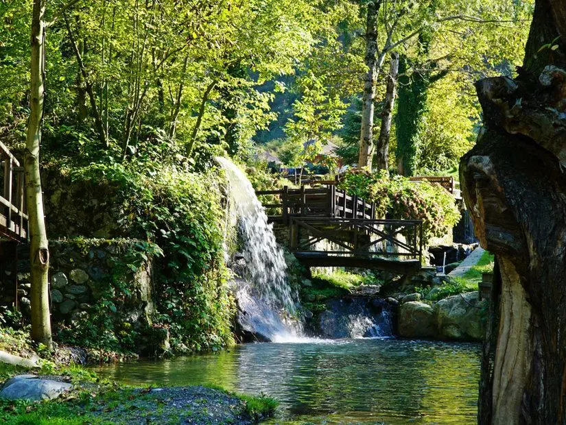
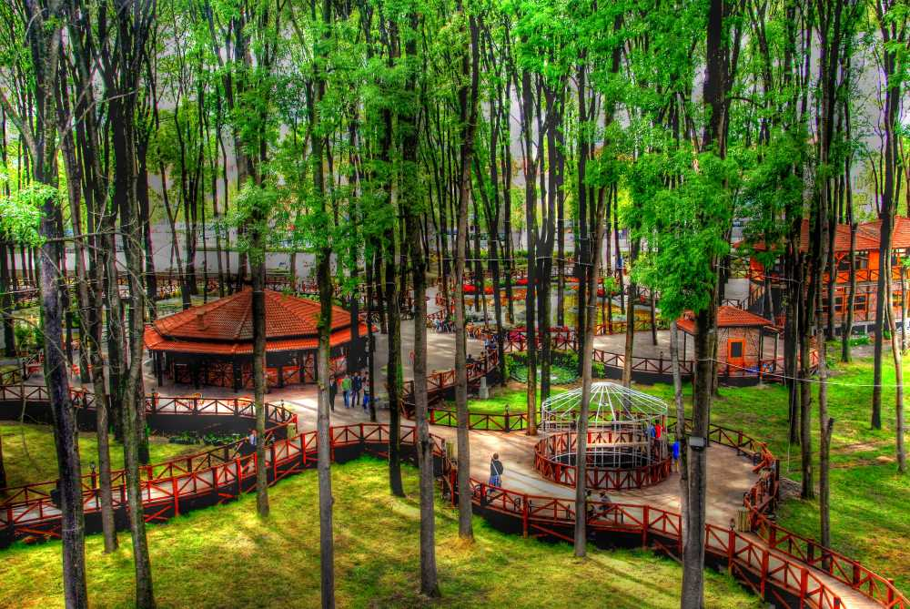

Sakarya'dan Kareler

Sakarya Üniversitesi
Eşsiz Sapanca Gölü manzaralı Esentepe Kampüsü.

Tarihi Uzunçarşı
Adapazarı'nın kalbinde nostaljik bir alışveriş turu.

Doğal Güzellikler
Sakarya'nın huzur dolu yeşil alanları ve şelaleleri.

Ormanpark
Şehrin içinde orman havası alabileceğiniz harika bir dinlenme noktası.